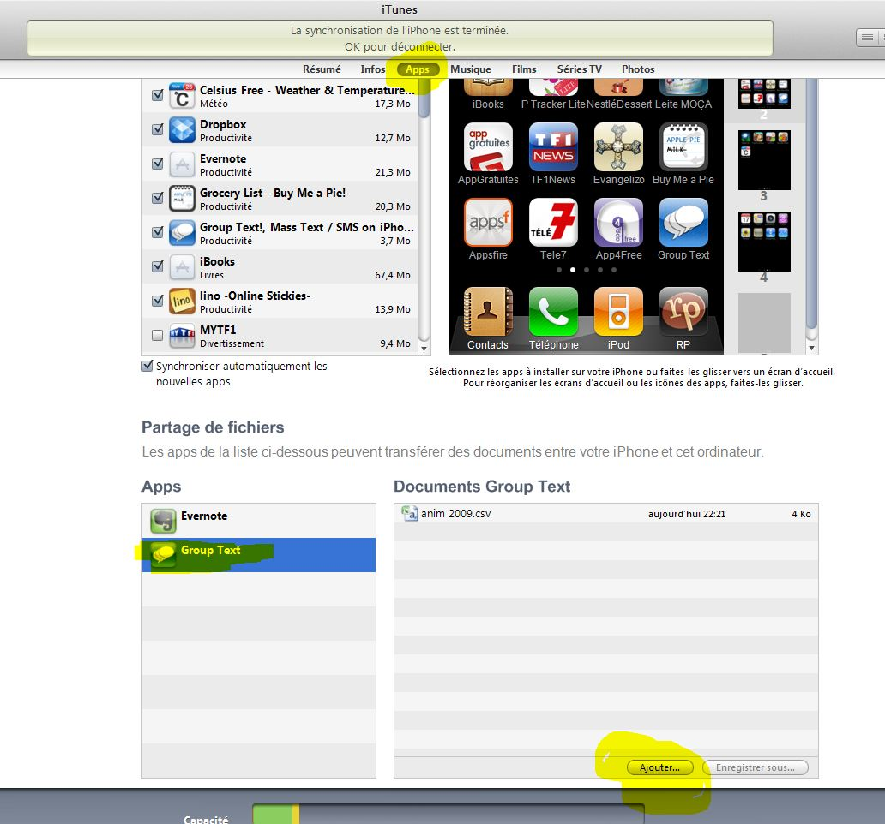

Voici de quoi faire des relances par SMS pour les paresseux possesseurs d'iphone du pélé VTT.
Il existe une apps appelée Groupe SMS! de Andrea Vettori pour 2,39€ (nous sommes d’accord, c'est rien par rapport au prix d'un iphone...) qui permet d'envoyer des SMS à un groupe, et ce qui nous arrange : d'envoyer des SMS à une liste de distribution faite à partir d'un fichier CSV (issu de la base de donnée du pélé) !!!
Pour cela, il suffit:
- D'installer l'apps
- de charger le fichier csv
- connectez-vous et votre iphone à ce fabuleux itunes
- puis allez sur Apps
- au bas de la page Apps, cliquez sur Group Text, puis sur ajouter et vous ajoutez votre fichier Csv (que vous pouvez exporter par \liste\SMS)
- 
- Une fois le fichier CSV ajouté, sur l'iphone allez dans Groupe Text
- Cliquez sur l'engrenage, puis gestionnaire de liste
- Puis cliquez sur ajouter une nouvelle liste, puis cliquez sur le + en bas de la page et "charger depuis un document csv"
- Sélectionner le fichier et donner un nom à votre liste et revenez au menu principal de l'apps
- Cliquez sur destinataires et sélectionner votre liste de diffusion
- Cliquez sur créer un message et racontez votre vie.....